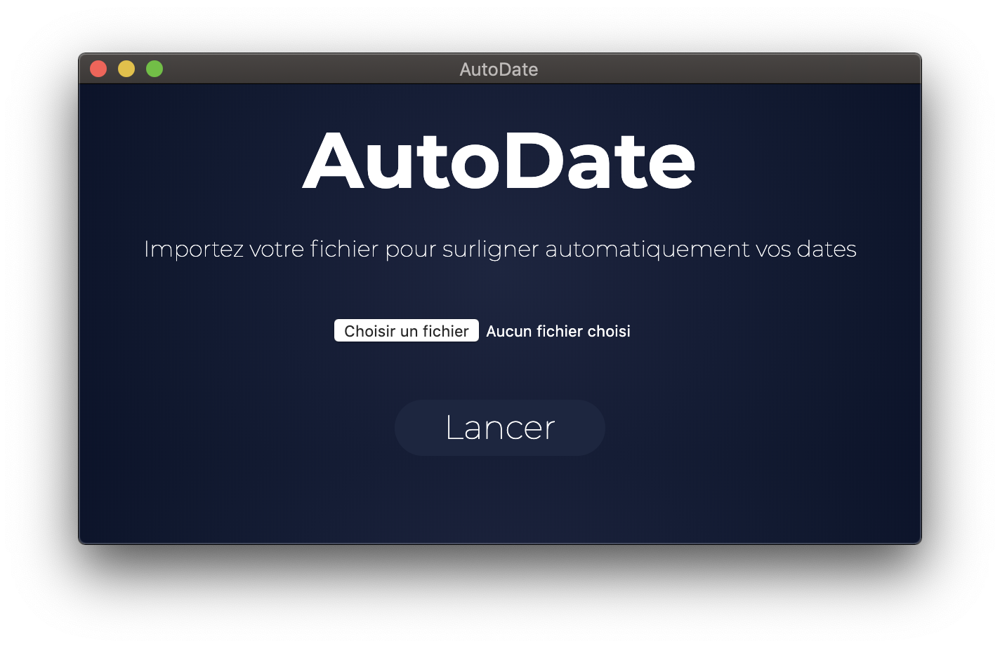

AutoDate
AutoDate est un outil d'automatisation voué aux étudiants, prenant leurs cours sur ordinateur, et ayant un nombre incommensurable de dates à surligner. Cet outil permet d'importer un fichier .docx et de l'analyser. A la fin, les dates comportant un certain format sont surlignées automatiquement, et un nouveau fichier en ressort, laissant l'original intact. Ce programme est une version alpha, d'autres fonctionnalités sont à prévoir, et des bugs peuvent exister. Si vous en trouvez, ou si vous avez des requêtes, merci de contacter l'équipe en charge du développement.
